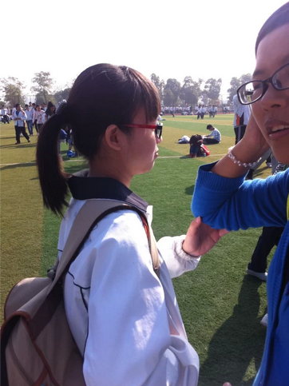
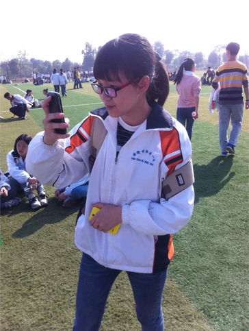
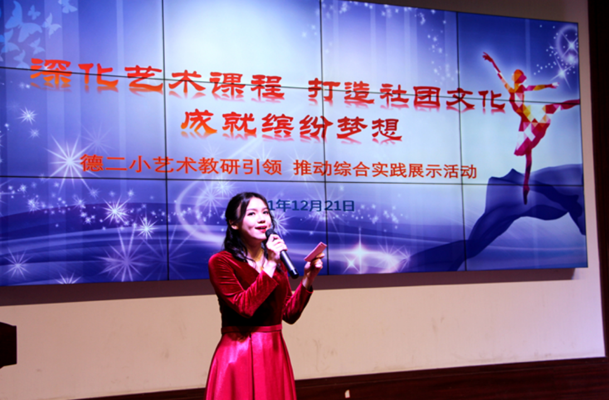
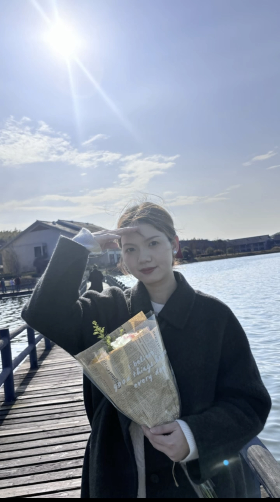

哈喽啊，容我开门见山了：实际上前段时间，当八年来第一次联系上你时，我是有一句话没说的，也是我yy了几天的🤡：“我们可以重新认识一下吗？（现在看来这句话也是多余了）”
怂如我，之前特意请教了你的某位闺蜜，得知你已经名花有主了，所以这里也不写什么怪话了。打扰到你非常抱歉。
当然，除了高中咱们坐过个把月的前后桌（那段时光算是三年里我唯一期待上学的日子 ，实在是为数不多的彩色回忆），以外，也未曾有其它的交集。所以，纵使想说一些怪话， 估计从他人的视角来看，也是难以令人信服的。
最后，想说句：高中时候的你，真是很可爱哇！😳

另外附几张照片（大概就是我所知道关于你的全部了）


